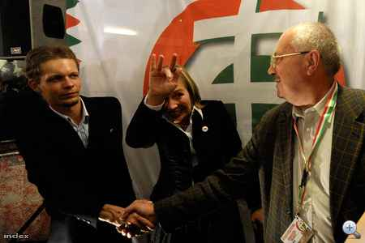

Megint nem teszünk különösebb erőfeszítéseket egy frappánsabb cím kiagyalására. Különben is, épp a boltot kéne takarítanom, ehelyett...
Tóásó Edit levelével kezdjük, aki a Bolíviában raboskodó Tóásó Előd testvére. A segítségeteket kéri a bebörtönzött hazafi megsegítésére. Segítsetek. Mi is ezt tesszük.
Sziasztok
Szeretnék köszönetet mondani, eddigi kitartásotokhoz, és hozzáállásotokhoz, amit eddig is tanusítottatok Előd, Árpi és Edu " terrorista " ügyében. De ezt tudjuk, hogy minden kommunista kedvenc ijesztegetése a bamba hívőinek.
A lényeg, hogy Elődöt onnan haza kell hozni, és a fiukat rehabilitálni kell. Az ügy jogi szempontból pozitívan halad, most azon dolgozunk, hogy átkerüljön Santa Cruzba. Ezt a Santa Cruziak is segítik. Tegnap tüntetéssorozatot indítottak, ez ügyben, és folytatni fogják addig, amig a komcsi Morales és bandája, nem dobja be a törülközőt.
Pünkösd vasárnap Elődért ajánlották fel a pünkösdi misét, és a beszéd részleteit szeretném veletek megosztani és ennek okán kérni a támogatásotokat.
"A pünkösd az egyház ünnepe, azon belül az összetartozás, egy közösséghez tartozás ünnepe. Legyünk boldogok, hogy egy közösséghez tartozunk, ingyen és bérmentve, és együtt élhetünk a közösség tagjaival. " Itt köszönöm, hogy Előd, a fiúk és e gyilkos űgy kapcsán én is közétek tartozhatom.
Az atya véleménye az volt, és az enyém is, ha egy ilyen közösség , aminek van 1000 tagja, és mindenki segít 2000 ft-al, akkor a hiányzó ez évi ügyvédi költség megvan.
Tudom vannak aggályaitok a szlával kapcsolatosan, de tudok adni olyan számlaszámot, ami nem publikus, adók miegymás, de baráti körben van, így nem a köpönyeges " barátaimhoz " megy. Ezen az ügyön is rajta vagyok, csak nehéz, és lassú, de elmúlik....
Kérlek segítsetek, hogy meglegyen a pénz. Hívjatok: 06-20-530-1597, írjatok:
toasoedit@toasoelod.com
www.toasoelod.com ( aki még nem tudná:))
Edit
Küldjetek egy ezrest, igazán nem sok, de seg
íthettek vele Elődön. És most blogajánló.Ficium írta:Olvasgassatok, nekem most nincs időm írni ilyesmikről. Haladjunk tovább. Mi a helyzet Erdélyben?
Gidro írta:Ma fedeztem fel egy emlékezetes cikket a napocanews.ro-n. A link a következő:
http://www.napocanews.ro/2009/06/de-rusaliile-catolice-ungurii-au-umblat-cu-boala-iredentismului-la-vedere.html
Nos, én elég, úgymond, érdekesnek tartottam. Nincs is sok hozzáfűzni valóm, lefordítottam a cikket, és küldöm nektek, okulásul. Alatta a kommenteket már nem fordítottam, de vázlatnak legyen elég annyi, hogy két 'román' a cikkben szajkózott okosságokat káromkodással elegyítve okádják a világba, míg ennél jóval többen, magyarok, elsősorban, de egy román és egy zsidó is szépen húzza le őket, a józan gondolkodásukra hatva, nem sok sikerrel. Na de, jőjjön a cikk:
A katolikus pünkösd alkalmával a magyarok irredenta betegsége a felszínre tört
A magyar irredentizmus súlyos betegség. Az ebben szenvedők többsége elrejti, otthon, a családban esetleg az iskolában adja tanújelét a bajának. Mégis, ha fontosabb történelmi dátum, vagy vallási ünnep közeledik, a tünetek felszínre törnek, és egyes irredenta magyarok a nagyközönség előtt felfedik ezen mentális gondjaikat, hasonlóan a leprásokhoz, kik elfelejtették, hogy a kolóniájukon kívül létezik egy normális világ. Így történt mindez ezen a hétvégén is a római-katolikusok pünkösdjének alkalmából.
Magyarok ezrei Romániából csakúgy, mint Magyarországról ostrommal bevették Csíksomlyó helységét, ahol több mint 400 éve a római katolikus magyarok a pünkösdöt ünneplik a hegy tetején. Sokan közülük, vélhetően a papjuk sürgetésére aki most a Európa-parlamenti választásokon jelöltette magát az RMDSZ-EMNT listáján, árpád sávos zászlókkal és Nagy-Magyarországos plakátokkal felfegyverezve érkeztek. Nem hiányoztak az úgynevezett Székelyföld zászlói sem, és a Wass Albert könyvek. Sok magyar Magyarországról, mivel az irredenta betegség határokon áthidaló, a 'Nosztalgiavonattal' jött Hargitára. Ez a vonat akadálytalanul áthaladt a román állomásokon azzal együtt, hogy a mozdonyon volt az Osztrák-Magyar Monarchia címere, ami bizonyítja, hogy az anti-román törvények még mindig a magyaroknak kedveznek. Sokan a turisták közül elmentek Magyarország volt határhoz, Gyimesbükkbe. Kolozsváron sem történtek másképp a dolgok. Több száz magyar turista jött szombaton Kolozsvárra, hogy a katolikus pünkösdöt ünnepelje. Ennek következtében autók tízei parkoltak a Szent Mihály katedrális körül az Unirii téren (Szerk. megj.: Azaz a Mátyás téren). És nem csodálkoztam nagyon, mikor a legtöbb kocsi hátán a Nagy-Magyarországos matricát láttam. Vasárnap ebéd után magyar turistákkal töltött autóbuszok tucatjai ténferegtek a város központjában parkolóhelyet keresve. A Szent Mihály katedrális előtt az irredenta-matricás kocsik mellett megjelent egy, 'Székelyföld' zászlójával. Valószínűleg egy volt Románia nagyjából 350 székelye közül.
A magyarok nem hagytak ki egyetlen vallási ünnepet sem az ilyesfajta tevékenység végzésére. Az önkontroll és a jóérzés ilyen fokú hiánya nem teszi őket jobbá, sőt úgy hiszem hogy mostantól a Tourette-szindróma kontrollálhatatlan kitöréseivel váltak egyenértékűvé a cselekedeteik. Kicsi koruktól arra tanítják őket, hogy utálják a románokat, az iskolában azt tanítják, hogy ők, magyarok, egy felsőbbrendű faj, ami miatt mindent megcsinálhatnak. Nem tanulnak románul, és a fiatalok körében egy háborús bűnös kultuszát terjesztik. Túl vannak adagolva, patetizmussal, és ez gyógyíthatatlan. Nincs mit csináljunk, sajnálnunk kell őket. Nincs nekik egyetlen egy világos pillanatuk sem, hogy felfogják: Nagy-Magyarországban, amire vágynak, csak 12 millió magyar lenne, és a kisebbségek (románok, szerbek, szlovákok, horvátok) többen lennének. Lehetséges, hogy így Magyarországnak az első elnöke román lesz!
Ezen a hétvégén megtanultam elfogadni a magyar szélsőségesek nézeteit, és megértéssel nézem őket. Csak beteg elméknek a kivetülései, embereknek akik nem tudnak többet és képtelenek is többre. Végül, csak a gyógyszerek tudják lenyugtatni a frusztrációkkal és megvalósítatlan dolgokkal teli életüket.
A multikulturális együttélés előmozdításának e szép példája után nézzük, mit kell tudni a politikáról, mint fogalomról. A végén linkajánló.
Anim írta:Akár a főoldalt is kitehetitek, ha akarjátok.Mondjuk általánosságban értelmezve számos más helyre is.
A jelenlegi időben. Az emberek nem beszélnek politikáról, általában soha, sehol. Magukban morfondíroznak néha erről a dologról. Mivel az emberek általában nem beszélnek róla, ezért sok ember úgy érzi vagy úgy is gondolja, hogy aki erről kezd el beszélni valahol, az nem helyes, az nem jó. Pedig, ez egy olyan dolog ami millió dolgot meghatároz az életünkben és a gyerekeink jövőjében is.
Abban is biztos vagyok, hogy sokan összeráncolt homlokkal néztek most, hogy mit keres politikai téma egy tutorial oldalon? Ne feledjétek, attól, hogy ez szokatlan, még nem jelenti azt, hogy ez rossz. Nyugi, egyébként itt ilyen csak választáskor lesz. Azért lesz, mert ez tényleg egy fontos dolog.
Meg biztos sokan azt gondoljátok, hogy mások azt gondolják, hogy ez rossz. Vagy, hogy mások is azt gondolják másokról, hogy ezt rossznak gondolják. És lehet akkor azon gondolkodsz ezután, hogy emiatt a gondolatod miatt, te is negatívan fogsz az oldalhoz hozzá állni. Meg hogy ez te rád is rossz fényt vet. Ez nem így van! Pedig még egyáltalán nincs rá konkrét személyed, aki tényleg támadást indítana emiatt. Na jó, 1 millióból egyet talán találsz, aki emiatt tényleg utálni fog. De mint ahogy azt te is tudod, vannak olyanok, akiknek nem tetszik, ha felszólítod, hogy ne a cipődre hányon már direkt, nagy piálás után. Vagy nem tetszik neki, hogy nem vagy elragadtatva attól, hogy beléd szúrta éppen a kést.
Valószínűleg egy minimális aggódás és félelem érzet diktálja beléd a rossz érzést, amit elsősorban a szokatlanság vált ki. Meg az, hogy a politikai szóhoz, számos negatív eseményt tudunk hozzá fűzni. Tudatosan és tudat alatt is. A tudatalatti pedig automatikusan negatívat befolyást sugároz feléd, annak ellenére is, hogy téves. De ha logikusan végig gondolod, felülemelkedve az állatiasságon, akkor rájössz, hogy egy “Menny el szavazni!” politikához köthető írás mennyire ártalmatlan, és hogy semmi bajod nem származik belőle.
http://www.supertutorial.hu/felelem-es-reszketes-a-politikatol/Felháborodott olvasónk következik.
osszi báttya írta:Szép esős napot!!!
Kampánycsendsértés? Reggel hatkor keltett a fidesz, hogy menjek szavazni mert a szemét jobbik és a csúnya magyarok már ott vannak és a kapukat döngetik a szavazókörök elött. Ebéd után az mszp is érdeklődött , hogy miújság velem majd ecsetelték,hogy ha nem akarok egy fasiszta országban élni, akkor menjek és ikszeljek nekik. Tegnap az szdsz is hívott,de azt azonnal letettem:). Na jó erről eggyitt csak tudnám , hogy a számom honnan tudják? Üdv nektek
Most pedig egy aggódó olvasónk.
Angyal Róbert írta:Kérlek nyugtass meg Blogin, hogy az a kép, ahol Morvai Krisztina így integet, ahogy egy bizonyos "kör" integet, az nem az amire én gondolok:

Amit a kuruc is kirakott, de aztán le is vett, nem véletlenül (örömünnep a Jobbik székházában), de az első képek közt volt.
Megvizsgáltuk a kérdést. Valóban van valami nagyon különös Morvai Krisztina viselkedésében. Azonban a kedves levélíró által burkoltan említett bizonyos kör, az Illuminátusok köszöntése biztosan eltér a Jobbik EP-listavezetőjének a képen látható kéztartásától.

Kerestünk hasonlóságokat a Vulkán bolygó lakóinak rituális köszöntésével, hátha kiderül, hogy Morvai Krisztina vulkanita, és csak azért viseli így a haját, hogy eltakarja a hegyes füleit. De hozzájutottunk egy március 15-i rendőrségi felvételhez, amelyen Morvai Krisztinát könnygázzal arcon fújják, és ezt kikockázva megállapítottuk, hogy amikor a haja a hajtógáztól hátralebben, látható, hogy teljesen normális, emberi fülei vannak. (Legalábbis a bal oldalon, mert a jobb oldali nem látszott a felvételen, de tekintve, hogy a félvér vulkaniták mindkét oldalon egyforma hegyes fülekkel rendelkeznek - lásd Spockot a képen - teoretikusan kizárhatjuk, hogy Morvai Krisztina jobb oldala vulkáni származású, míg a bal oldali nem.)
Több hipotézist felállítottunk és elvetettünk, míg végül arra jutottunk, hogy Morvai Krisztina valószínűleg egy büszke zsidó honfitársunknak integet, aki tudósítóként tartózkodott a Jobbik pártközpontjában, ernyedten lógó középső ujjával jelezve neki, hogy mivel játsszon a továbbiakban. Huncutkodó arckifejezése is azt sugallja, hogy valamiféle pikáns utalás áll mozdulata mögött. Kutatási eredményeink jegyzőkönyvét természetesen továbbítottuk a Bombagyárat üzemeltető Mazsihisznek és a Moszadnak, akik meg fogják tenni a szükséges lépéseket a felháborító és kirekesztő megnyilvánulás világméretű elítélése érdekében. Egyúttal a Star Trek betiltásáról is gondoskodunk.
http://www.cikiacigi.hu/kicsik/meseszepes.html
Droidzóna- Maga a "ciki a cigi" kampány is belefér a droid zónába. Ciki a cigi -írd be a google-ba!
Ha nem látsz semmit a főoldal tartalmából klikkelj ide! - ez a mondat fog megjelenni - egyébként nem lesz hová kattintani, egy kék lap jelenik meg. (Azért persze ha akarsz be lehet jutni - lásd a linket..)
Ha mégis bejutsz, akkor meglátod a tömény szocializmust webre alkalmazva. A "kicsiknek" - 5 évesen ennél jobban nem is sérthetsz meg egy gyereket! - szóló menüben leltem a belesülős mesét, amit elfelejtettek megvágni. Ennek linkjét küldtem legfelül. Selypítő óvónéni mesél - katasztrófa az egész. És a mesében szerepel az alábbi "tündéri" mondat (egy tündér mondja!! komolyan!) :
- Már én sem fogok hencegni azzal, hogy passzív dohányos vagyok. Soha életemben nem fogok cigarettázni, pipázni. És ha elmondom ezt az igaz mesét anyukámnak, akkor biztosan ők sem.
Az egész oldal szakmailag is, webes szemmel is, esztétikailag is gáz - és erre valami eszement pénzt szórhattak el ezek a dilettánsok! Nyilván a twitterező, egyszervolton önállóan kattingató, iwiw-ező 5-14 éves gyerek és kistini korosztály erre a tömény bénaságra fog kattanni ... ha meg OF órán kötelező jelleggel megnézetik velük, a hatás épp az lesz, amit várnak tőle: az ellenkezőjét fogják csinálni annak amit jó szüleik mondanak nekik. Éljen a dohányzásra szoktató program! A mi pénzünkből.
Nagyjából biztos vagyok a nemleges válaszban, de azért megkérdezném tőlük: ismerik-e a weben azokat a felületeket, amiket a célzott korosztály néz? (Ha igen, miért nem azt használják) Láttak-e gyereket az 1980-as évek óta közelről napi cselekvés közben? (Ez a nívó már a '80-as években is ciki volt!) A webmesterüknek meg egy jótékony seggberúgás ...
Nagyszerű. Egyébként a cigi tényleg ciki. No, nézzük, hogy viszonyul Sándor Kovács Balázshoz.
Sándor írta:Interjú Kovács Balázzsal
Örülök, hogy ismét felkerült ide a téma. Én (azaz inkább mi, hiszen kis családi vállalkozás vagyunk) inkább az autóival kerültünk kapcsolatba. Voltak ugyan hülye megjegyzései a fickónak, de mindig rendesen fizetett, így elkönyveltük annak, hogy újgazdag hülyegyerek. Meg sok pénzzel, ámde kevés ésszel rendelkező fiatal.
Aztán egyszercsak jött egy törött Z350-el, hogy sürgősen csináljuk meg, nem akar rá sokat várni. Ok, megrendeltünk 600 000Ft értékben alkatrészt, majd 1 hét múlva szólt a szomszédunk (tréleres), hogy vinné az autót. Balázskát felhívtuk, hogy "miafaszvan?" Erre valami olyasmi volt a válasz, hogy ő nem rendelt meg semmit, meg egy hét alatt nem voltunk képesek megcsinálni az autót, stbstb. Persze japánból úton volt az alkatrész, nagy részét még ma sem sikerült eladni. Épp azon a héten gondolkodtunk, hogy mikor kéne lekarcolni az autóin a pénzünket, amikor olvastuk, hogy mi történt a cégével.
Azt azért hozzá kell tenni, hogy vezetni azt nem tud :) Kéthetente volt valami lányos horzsolás az autóin, pl nekitoaltott valaminek, vagy megcsúszott a vidámparknál. Kizárólag autómata váltós autóval ;) Ami már önmagában is LOL egy sportkocsin, de ok, ez is a több pénz, mint ész kategória. Azért a rendőrség az autópályán "menekülő" BMW-t ha akarja, elkapta volna. Menekülni nem autópályán kell, még a Need For Speed-ben sem :)
Szerintem amit Tomcat ír, az igaz, csak ne sztárolná ezt a büdös gyökeret. Valószínüleg az én pénzemből gazdagodott meg, ha tényleg állami megrendelései voltak.
Senki sem sztárolja, interjút készítettem vele, mert érdekes lehet, aztán lehet utálni, ha akarod. Ahogy az ő monológjához, úgy a te leveledhez sem fűzök semmit.
Kántor Attila írta:Kedves Tomcat!
Nagyon tetszett tegnapi írásod, a "Hazudnak az ózdi cigányok".
Rögtön tovább is küldtem egy most külföldön élő ózdi rokonnak.
Érdemes elolvasni a választ.
"olvastam a fajvedo cikket tegnapelott, jot kacagtam nehol. mikor meg otthon eltem, a kornyeket is kerultem. De Arlonak Borsodszentgyorgy fele eso resze meg durvabb. ott mar az automatak is le vannak racsozva, oda az ozdi rendorok ki sem mennek, csak a helyi "maffiozok", ha valami balhe van a kocsmaban...
par eve, mikor ket csalad - ugy 150-en - osszecsaptak, molotov-koktel, stb., Miskolcrol mentek le kommandosok. az a kokemeny hely. en mar azt is furcsallottam, hogy allitolag ket napot toltott ott a tudosito. az is santitott kicsit. Arlo kozpontjabol kizavarnam egy szal kameraval a tohoz, ugy este 8-9 korul, lehetoleg segilyke utan ket nappal...
osszekocolnak a fogait, ugy hiszem. nem irogatna tobbet ilyen baromsagot."
Üdv:KA
Üdvözlöm az ózdiakat, egyúttal el is gondolkodtam, lenne-e igény arrafelé egy lángszóró-szaküzletre.
Ez volt a levrov. Köszönjük, hogy. Aki akar, írjon még. Néhány további levelet a rádióban olvasunk majd fel.